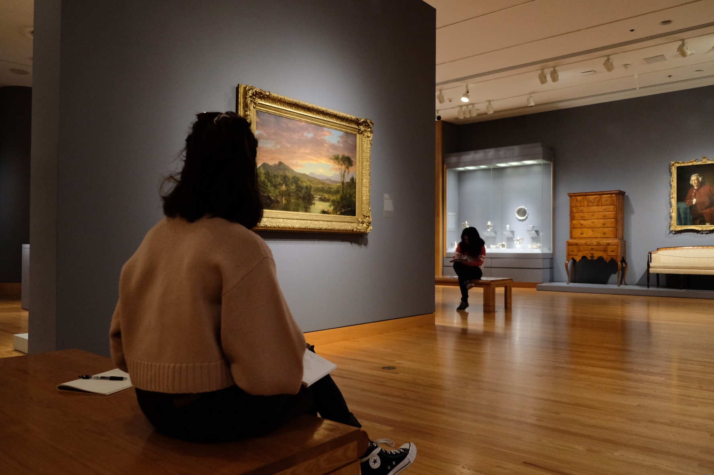
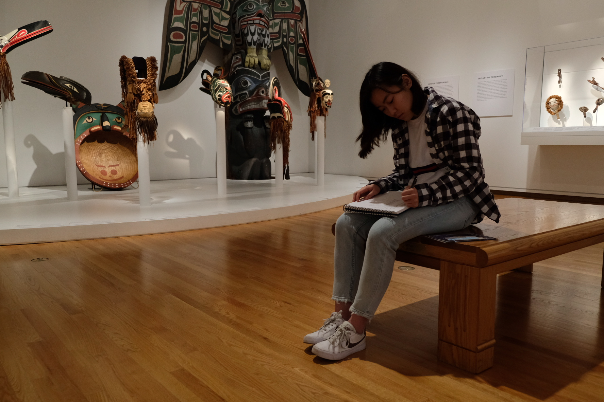

Fly-On-The-Wall Observation
As a team, we set aside a Saturday afternoon to visit the Seattle Art Museum to observe visitors as they went throughout the museum in groups or by themselves. After using the fly-on-the-wall observation method, we proceeded to speak to a volunteer of the museum about her experiences with visitors and the museum.

